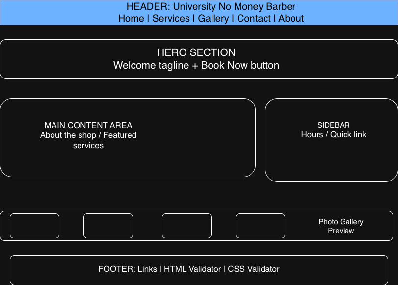
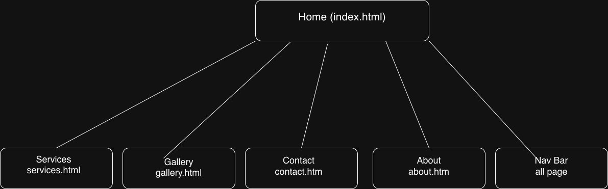

Project Overview
1. Project Overview
Project Name: University No Money Barber – Web Application
This web application serves as an informational and referral platform for University No Money Barber, a local barber shop that serves college students and the surrounding community. The purpose of the site is to provide a central place where students can find barber information, view services and pricing, browse a photo gallery of past haircuts, and easily get in contact with or book an appointment with the barber.
The idea for this project came from a personal need — friends frequently ask for barber referrals, and there is currently no dedicated website for this business. This application solves that problem by giving the barber shop an online presence.
Intended Users
- College students looking for an affordable, nearby barber
- New students or residents unfamiliar with local barbers
- Anyone looking for haircut services, pricing, and availability
- Friends and peers seeking a trusted barber referral
Overview of Website Content
- Home page introducing the barber shop and its value
- Services page listing all haircut types and prices
- Gallery page showing photos of past haircuts and the shop
- Contact page with a form to send a message or request an appointment
- About page with information about the barber and shop location
2. Client Information
- Client Name: Lebron James
- Organization / Business: University No Money Barber
- Client Email: lakergoat172@gmail.com
- Client Phone: 123-4567-8900
- Client Category: Peer classmate (Category 01)
- Project Category: Individual promotion – a professional/community-facing small business website
3. Wireframe
The wireframe below shows the default page layout planned for the University No Money Barber web application. It was created using

4. Site Map
The site map below outlines all five pages of the web application and shows how they are connected through the navigation bar. It was created using Draw.io.

The five pages and their navigation relationships are:
- index.html (Home) – linked from all pages via the navigation bar
- services.html (Services) – linked from all pages via the navigation bar
- gallery.html (Gallery) – linked from all pages via the navigation bar
- contact.html (Contact) – linked from all pages via the navigation bar; also linked from the Home page via a call-to-action button
- about.html (About) – linked from all pages via the navigation bar
5. Page Design
Page 1: Home (index.html)
| Purpose | Introduce the barber shop, its brand, and direct users to other pages. |
| Audience | All visitors — first-time and returning users. |
| Content | Hero section with shop name and tagline, a short welcome paragraph, featured services summary, and a call-to-action button linking to the Contact page. |
| User Data Entry | No data entry on this page. |
| Validations | None required. |
| Buttons / Links | Navigation bar links; "Book Now" button linking to contact.html. |
| Actions | Clicking "Book Now" navigates the user to the Contact page. |
| Notes | Includes a consistent header and footer across all pages. Footer includes HTML and CSS validation links. |
Page 2: Services (services.html)
| Purpose | Display all haircut services offered and their prices. |
| Audience | Prospective customers wanting to know what is offered and how much it costs. |
| Content | A list or table of services (e.g., fade, lineup, shampoo) with descriptions and prices. A jQuery accordion or tabs widget will be used to organize service categories. |
| User Data Entry | No data entry on this page. |
| Validations | None required. |
| Buttons / Links | Navigation bar; a "Contact Us" link at the bottom directing users to book. |
| Actions | jQuery-UI accordion expands/collapses service categories when clicked. |
| Notes | jQuery-UI widget requirement is fulfilled here using an accordion. |
Page 3: Gallery (gallery.html)
| Purpose | Showcase photos of haircuts and the barber shop environment to build trust with potential customers. |
| Audience | Prospective customers wanting to see examples of the barber's work. |
| Content | A grid of photos provided by the client. Each photo can be clicked to expand into a lightbox/modal view. |
| User Data Entry | No data entry on this page. |
| Validations | None required. |
| Buttons / Links | Navigation bar; clickable image thumbnails. |
| Actions | Clicking an image opens a larger version using a JavaScript/jQuery lightbox effect (interactive image gallery). |
| Notes | Fulfills the assignment requirement for an interactive image gallery. |
Page 4: Contact (contact.html)
| Purpose | Allow users to send a message or request an appointment with the barber. |
| Audience | Any user who wants to reach out or book an appointment. |
| Content | A contact form with fields for name, email, phone number, preferred appointment date, and a message box. Also includes the shop's address embedded via Google Maps (AJAX/iframe). |
| User Data Entry | Yes — name, email, phone, date, and message fields. |
| Validations | Name: required, text only. Email: required, valid email format. Phone: numbers only. Date: must not be in the past. Message: required, minimum 10 characters. Validation performed using JavaScript on form submit. |
| Buttons / Links | Navigation bar; "Submit" button to send the form. |
| Actions | On submit, JavaScript validates all fields and displays a success or error message to the user. The embedded Google Map is loaded dynamically via an AJAX call or iframe embed. |
| Notes | Fulfills the assignment requirement for a form with JavaScript validation. AJAX functionality is fulfilled through the dynamic map or a fetch call to load shop hours. |
Page 5: About (about.html)
| Purpose | Tell visitors about the barber, the shop's story, and its values. |
| Audience | New visitors wanting to learn about the business before committing. |
| Content | A short biography of the barber, the shop's background and mission, a list of credentials or experience, and a photo of the barber. |
| User Data Entry | No data entry on this page. |
| Validations | None required. |
| Buttons / Links | Navigation bar; a "Book an Appointment" link directing users to the Contact page. |
| Actions | Clicking "Book an Appointment" navigates to contact.html. |
| Notes | Content (bio, photo) will be provided by the client. |
6. Dynamic Functionality
The following describes the planned JavaScript and jQuery interactivity for the University No Money Barber web application:
-
Contact Form Validation (contact.html)
JavaScript will validate all form fields when the user clicks "Submit." It will check that required fields are not empty, that the email is properly formatted, that the phone number contains only digits, and that the selected date is not in the past. An error or success message will display dynamically without reloading the page.
Example: https://www.w3schools.com/js/js_validation.asp -
Interactive Photo Gallery / Lightbox (gallery.html)
A JavaScript-powered lightbox will allow users to click on a thumbnail image and see it enlarged in an overlay. Users can close the overlay or navigate to the next/previous image. This fulfills the interactive images requirement.
Example: https://lokeshdhakar.com/projects/lightbox2/ -
jQuery-UI Accordion – Services (services.html)
A jQuery-UI accordion widget will be used to organize service categories (e.g., Fades, Lineups, Special Services). Each category expands when clicked to show its services and prices, keeping the page clean and easy to navigate.
Example: https://jqueryui.com/accordion/ -
AJAX – Dynamic Shop Hours or Google Map (contact.html)
AJAX will be used on the Contact page to dynamically load the shop's location map or business hours from a JSON file or external source without a full page reload. This provides a smoother user experience and fulfills the AJAX requirement.
Example: https://api.jquery.com/jquery.ajax/